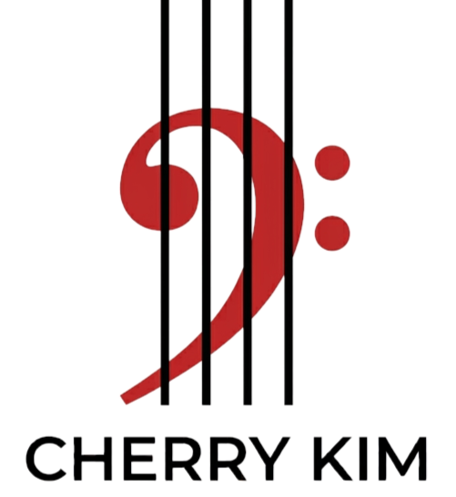
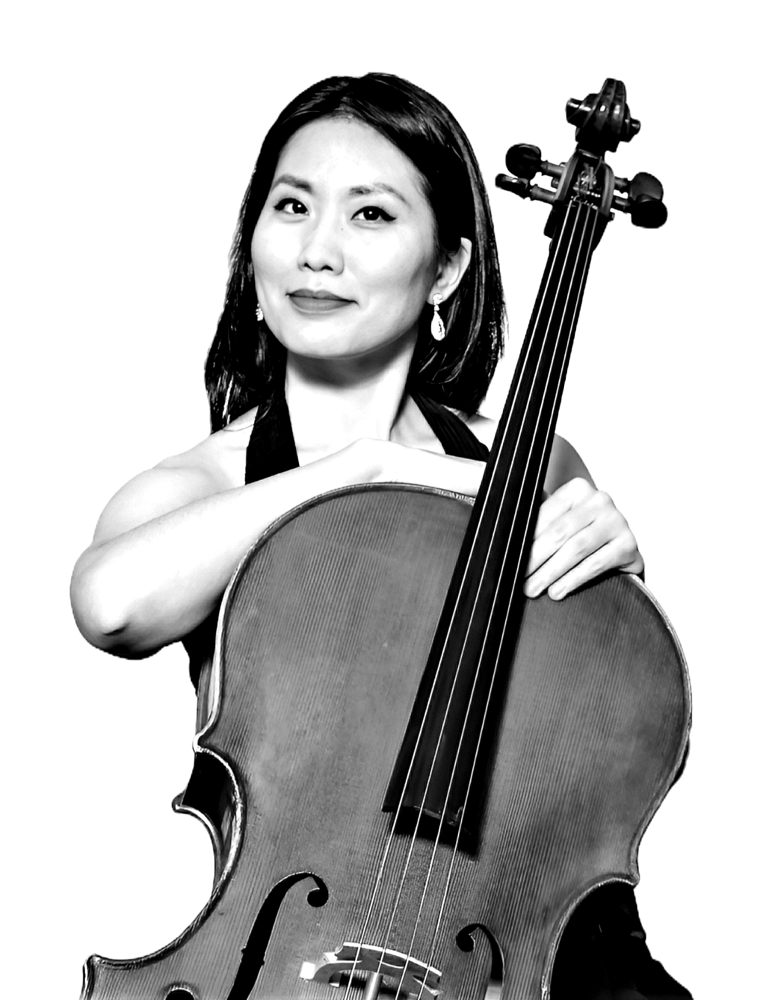
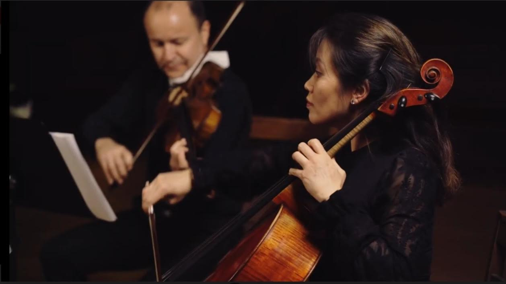
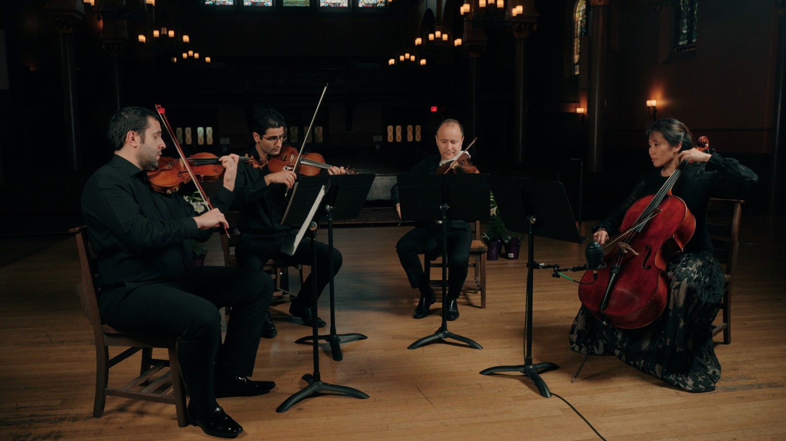
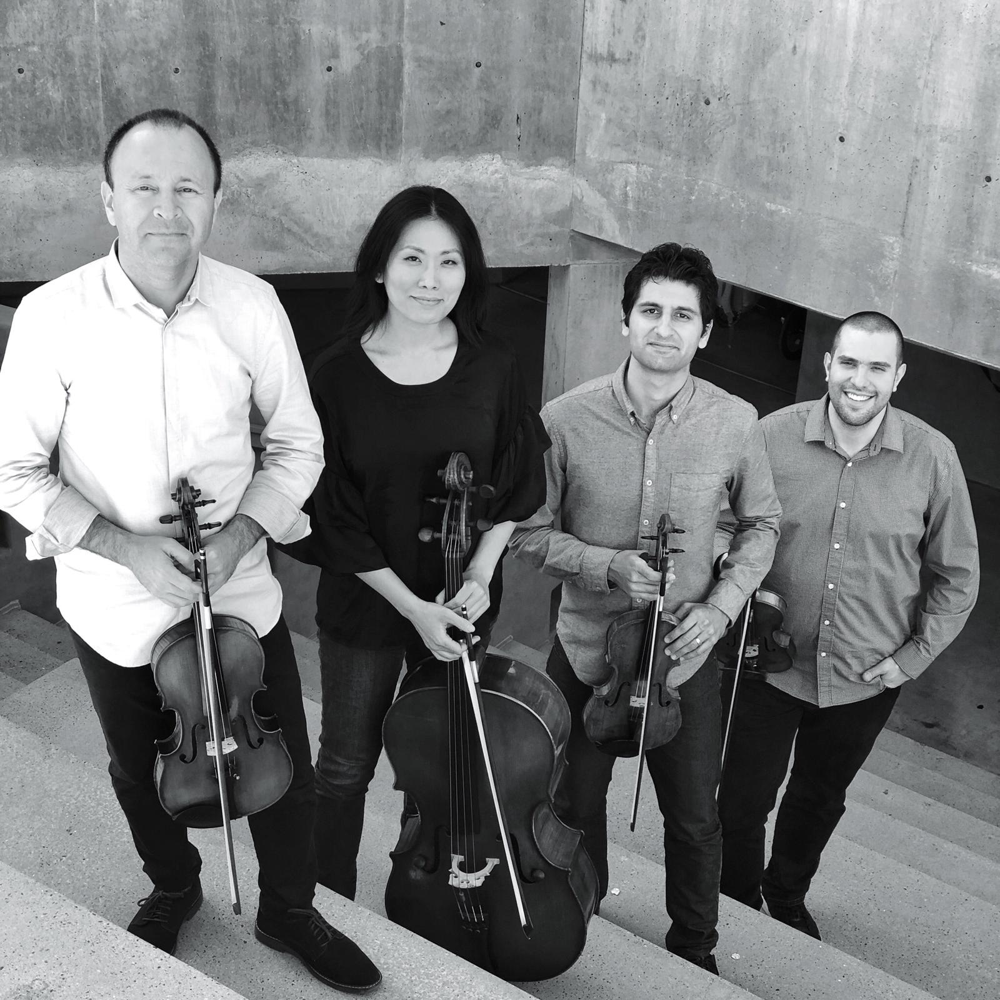
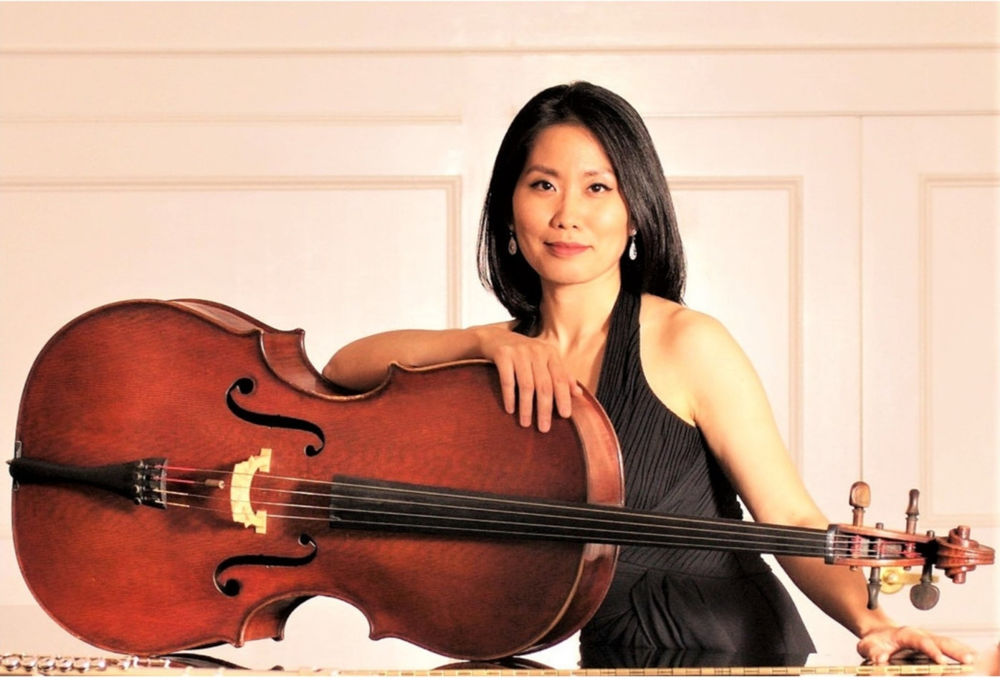

Solo & Chamber
Recitals, collaborations, intimate programs, and imaginative musical pairings.
Inquire ↗
CHERRY KIMCellist · Pedagogue · Artist
Poignant lyricism, expressive depth, and a life devoted to music.
“Poignant lyricism, scope and bigness of her sound and expressive gestures.”
— The Boston Musical IntelligencerA life shaped by sound, curiosity, and connection.
Cherry Kim is a Boston-based cellist and pedagogue whose work moves between solo performance, chamber music, orchestral playing, historical performance practice, and teaching.
She has performed in the United States and internationally as a recitalist, chamber musician, and soloist, while cultivating collaborations with ensembles and artists.
Invite Cherry to perform ↗
Recitals, collaborations, intimate programs, and imaginative musical pairings.
Inquire ↗Guest and principal cello work with orchestras throughout New England and beyond.
Inquire ↗Programs connecting music with history, visual art, storytelling, and fresh perspectives.
Collaborate ↗



Boston Cello Academy
For more than 20 years, Cherry has helped students of all ages build a strong technical foundation while discovering their own musical voice.
Let’s make something memorable.
For performance, teaching, chamber music, collaborations, and other inquiries, please send a message.
Your message will be delivered through the site's secure contact form.